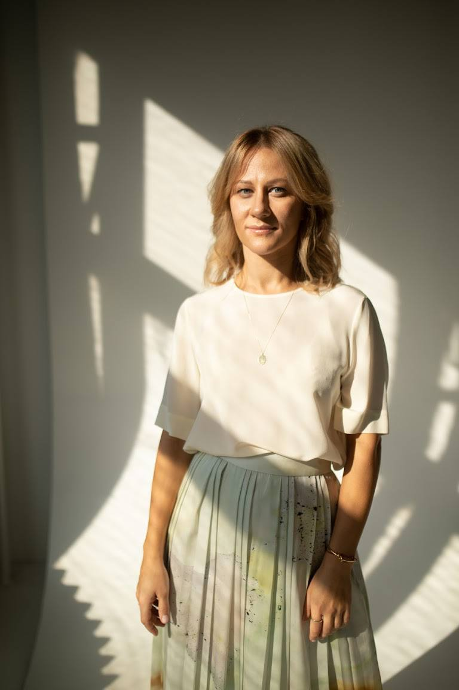

Инна Яцкова
Москва · Санкт-Петербург
Исследователь · Визионер · Философ · Практик · Эстет
Эволюционирую системы через внутреннюю этику и смыслы.
Культура присутствия.
Написать в Telegram ПодписатьсяО себе
Спасибо, что вы здесь. Это живая интерактивная карта: она помогает найти способ для совместного развития — от персонального взаимодействия и совместных проектов до нетворка и неформального дружеского общения.
Я — человек думающий, задающий вопросы и ищущий ответы. Чувствующий — это моя главная идентичность. Я исследую любую тему, которая вызывает интерес, через знания и опыт. Мои главные вопросы: «как устроено мироздание» и «что за явление — человек». Я любуюсь самобытностью и уникальностью каждой системы и умею видеть неочевидную красоту.
Меня волнуют вопросы наследия, воспитания детей из цельной зрелой позиции, комплексного благополучия, долголетия и глубокого качественного контакта с собой и другими.
Точка спокойствия
С 2017 года я создаю «Точку спокойствия». Она начиналась как личный блог, а затем выросла в площадку и сообщество об эволюции человека и общества: о том, как применять практики и системы развития на разных уровнях, чтобы обрести внутреннюю целостность и развивать ресурсы тела и духа. Отдельный трек — визионерские размышления о развитии мира и социума. Совместное исследование человеческой природы и мира в системном подходе.
Telegram-каналОпыт в цифрах
Карьера
2007–2015 · БКС Мир инвестиций
Специалист, руководитель, бизнес-аналитик, проектный менеджер
2017–2019 · Коммерческая фотография
2020 — н.в. · Коучинг, медитация и осознанность, менторство
Образование
Базовое (высшее)
- 2002–2007 — Сибирский институт управления — филиал РАНХиГС, экономический факультет, «Финансы и кредит»
Коучинг и осознанность
- 2020 — ICP Centre, «Концепт коучинга», вводный курс Галины Вдовиченко (сертификат ICF)
- 2020 — Курс по эмоциональному благополучию, 12 часов, Виктор Ширяев
- 2020–2021 — Практики базовой осознанности, MindUP, Виктор Ширяев
- 2021 — Полный курс коучинга, 125 часов, ICP Centre, Галина Вдовиченко (сертификат ACSTH ICF)
- 2021 — Mindfulness Instructors Training, 1 уровень, 96 часов, Виктор Ширяев
- 2021 — «Метод 5 Призм в работе коуча», Академия 5 Призм, Юрий Мурадян, Ольга Рыбина
- 2022 — Онлайн-ретрит «Сокровенное», Елена Ридель
- 2023 — Mindfulness Instructors Training, 2 уровень, 8 месяцев, Виктор Ширяев
Психология
- 2024–2025 — ДПО «Психологическое консультирование», 1200 часов, с правом частной практики, Московский институт психоанализа
- 2025–2026 — ДПО «Основы психологической науки и практики»
Дизайн, искусство, продюсирование
- 2017–2019 — Интенсив по дизайну интерьера, Дарья Казанцева, Британская высшая школа дизайна
- 2017–2018 — White Photo School: базовая и коммерческая фотография, ретушь (Андрей Никольский, София Карайванская)
- 2017–2019 — Курсы «Большие стили — большие истории» (Любовь Попова) и «История классического балета», «История современного танца» (Вита Хлопова)
- 2021–2022 — «Масштаб 5.0», курс по запускам и продюсированию, Мари Афонина
Практика
Ретриты и духовные экспедиции
- 2022 — Индия, Ришикеш, Елена Ридель
- 2023 — Байкал, Светлана Антоновская
- 2024 — Урал, Елена Ридель
- 2025 — Непал, Светлана Антоновская
- 2025 — Перу, Светлана Антоновская
Терапия и медитация
- 2020–2022 — психоаналитическая терапия
- 2022–2026 — гештальт-терапия
- С 2020 года регулярно майндфулнес-медитации, шаманские практики
Форматы работы
Личное · разовое
Консультация
Консультирую по любым темам, где могу быть полезна: карьера, личное развитие, отношения, родительство, финансы и капитал, бизнес. Это не коучинг и не психологическое консультирование, а опора на мой опыт, знания и ресурсы.
7 500 ₽ · 90 минут
ЗаписатьсяЛичное · программа
Индивидуальная помогающая работа
Альянс на длительное время для развития метанавыков, освоения практик осознанности и их приложение к жизни. Системно восстанавливаем контакт с собой, строим практику осознанности и создаем персональную стратегию благополучия.
Созвоны по 90 минут, раз в неделю.
50 000 ₽ в месяц
Оставить заявкуЛичное · терапия
Психологическое консультирование
Длительный альянс для глубинной работы с поведенческими аспектами и автоматизмами, работа с ценностями, смыслами и целостностью личности, с состоянием через качество контакта с жизнью.
Созвоны или очные встречи в Москве по 50 минут.
Пропуски оплачиваются. Длительность от 6 месяцев.
5 000 ₽ за встречу
Оставить заявкуПартнёрство
Менторство и адвайзинг
Вхожу в проекты на контрактной основе: консультирование, коучинг, фасилитация, аудит, поиск новых векторов развития и смыслов.
Оставить заявкуСообщества и групповой формат
Мастермайнды, воркшопы, ретриты
Управление состоянием, работа со стрессом, продуктивность, развитие метанавыков, фокус на ценностях и смыслах, новое лидерство.
Оставить заявку